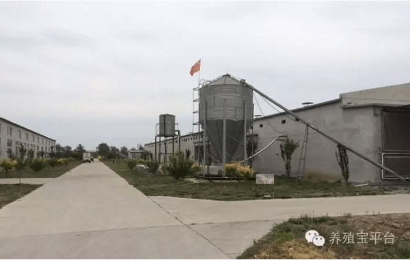
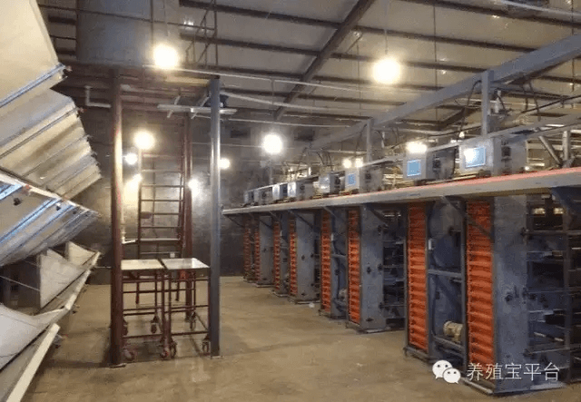
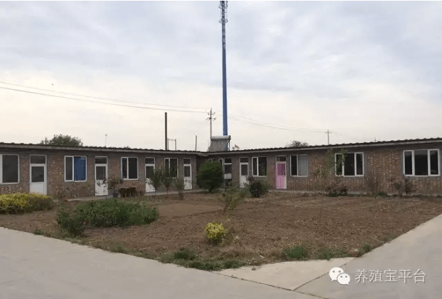
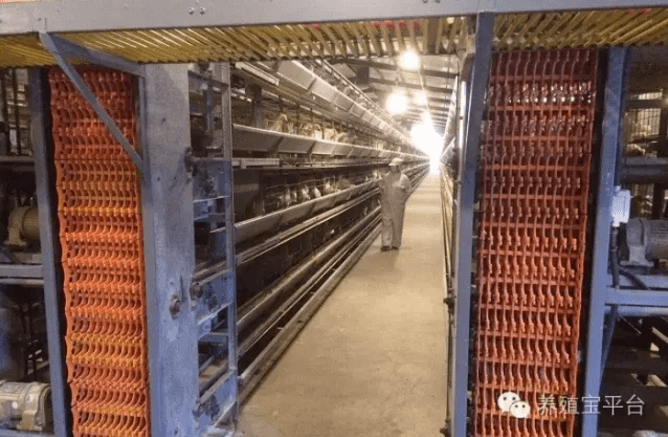

从农民到百万企业家，他这样做……养殖宝“寻找中国最美养殖场”第六期
由“养殖宝”主办的“寻找中国最美养殖场”系列活动已举办了五期，引起了多方媒体的广泛关注，并且在这期间，我们不断接到各地养殖企业的邀请，在社会各界反响良好。
活动进行到第六期，我们继续关注天津滨海新区，聚焦一家新的养殖企业——天津市百胜蛋鸡养殖专业合作社。
百胜蛋鸡养殖专业社建场近四年时间，目前拥有2栋鸡舍，养殖蛋鸡共计8万只，每年收益可达200万元以上。
 百胜蛋鸡养殖专业合作社场房  养殖鸡舍内部据场长马树成介绍说，在多年养殖生涯中，他自己总结了一套独有的饲养管理方法，效果显著，蛋鸡疾病很少，大大降低了养殖成本，年收益得到直接提高。并且通过施行为蛋鸡喂养鸡类保健品的方法，减少了蛋鸡体内的药物残留，使生产出的鸡蛋更绿色、健康，保障了销售质量。
并且养殖场周边开设果园，蛋鸡养殖排放的废物废水可直接引到果园，作为植物肥料。这种无害化处理方式真正实现了循环养殖、绿色养殖、生态养殖。
 鸡舍外部干净整洁除此之外，为了扩大销售渠道，天津百胜蛋鸡养殖专业合作社还专门开设了“流动蛋鸡超市”，以流动销售的形式，为客户提供更加便捷的上门服务，也增加了养殖场的收益。
马场长说，“流动蛋鸡超市”是一种单向的线下销售行为，要广泛扩大销售范围，还是要懂得利用互联网。农村电商市场广阔，百胜蛋鸡要走向网络才能争取更大的市场份额。“养殖宝”就是一个非常便利的互联网服务平台，在这个平台上，可以每天查看到市场行情和专家对于市场走向的深入分析，坚持学习，便可以抢先抓住市场命脉，抢在竞争对手之前赢取市场。也便于及时调整管理方向，降低损失、实现利润最大化。
 养殖场工作人员监察鸡舍情况每次结束“寻找中国最美养殖场”的采访，我们都为这些养殖企业家的创业经历感慨不已。百胜蛋鸡养殖专业合作社的马树成场长本是一名普通农民，从白手起家到年收益200余万，他经历风雨，也终于迎来硕果。在未来赢得更大成功的路上，“养殖宝”将一路伴随，为我们的用户提供最优质的服务。
“寻找中国最美养殖场”系列活动仍在进行中，如果你也是养殖户，你也懂得养殖行业的艰难辛苦，与“养殖宝”联系，说出属于你的故事。